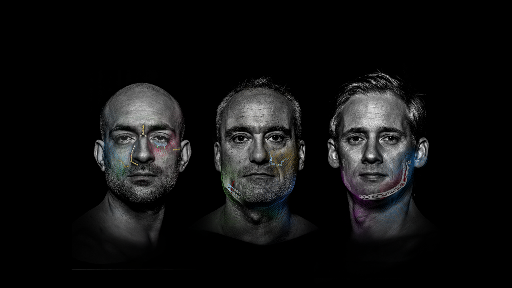
Cirurgia craniomaxilofacial
MODUS 2
Um sistema. Três indicações.
Terço médio da face, mandíbula e ortognática.
Treinamento de produto — cirurgiões, distribuidores e força de vendas
Agenda
1De onde vem o MODUS1997 → 2025
2O que mudou no MODUS 2Conceito e tecnologias
3MidfacePlacas, malhas e parafusos
4MandibleTriLock por indicação
5OrtognáticaPlacas L e Z
6Sistemas complementaresChave 90° e transbucal
MODUS 2 — Treinamento de produto
2
Linha do tempo MODUS
Vinte e oito anos de osteossíntese craniomaxilofacial em titânio. Cada geração resolveu um problema de sala cirúrgica.
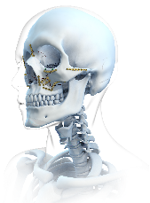
1997Fundação da Medartis AG por Thomas Straumann, Willi Miesch e Jürg Eichenberger. Compra dos direitos do sistema MODUS da Elekta.
1998Início das operações e contratação dos primeiros funcionários.
2001Lançamento do sistema MODUS em quatro versões, com implantes de titânio para cirurgia CMF.
2002Primeiro congresso com a linha MODUS apresentada ao público cirúrgico.
2004Sistema RECO: o primeiro com bloqueio angular — a inovação que definiu o portfólio inicial.
2020Desenvolvimento do bloqueio TriLock.
2025MODUS 2. Um conceito de cores, três indicações, tecnologias comprovadas.
MODUS 2 — De onde vem o MODUS
3
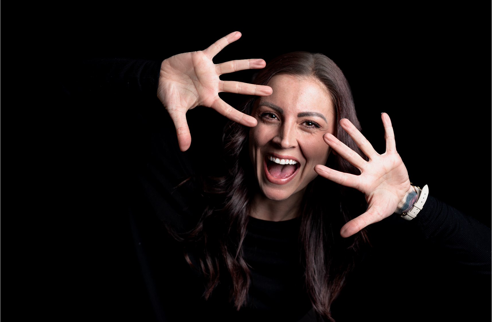
Capítulo 02
O que mudou?
MODUS 1 resolvia por sistema. MODUS 2 resolve por indicação — com o mesmo código de cores em todas as bandejas.
4
MODUS 1 → MODUS 2
MODUS 1
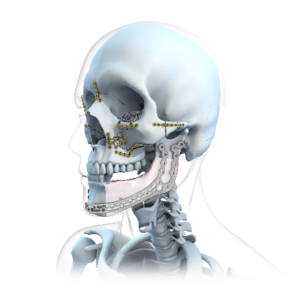
- ⎼Sistemas independentes, cada um com sua lógica
- ⎼Códigos de cor distintos por linha
MODUS 2
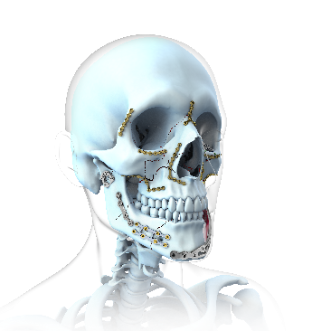
- ⎼Um conceito de cores para todos os sistemas
- ⎼Implantes novos sobre tecnologias comprovadas
MODUS 2 — O que mudou
5
Um sistema para três indicações
⎼Conceito de cores uniforme e fácil de usar em todos os sistemas
⎼Cobertura ampla de indicações do terço médio da face, mandíbula e ortognática
⎼Recipientes estéreis ou implantes avulsos — a seleção é do cirurgião
⎼Implantes e instrumentos novos sobre tecnologias comprovadas da Medartis
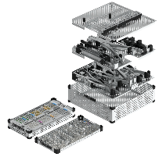
Midface
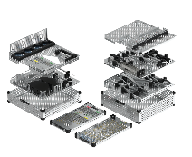
Mandible
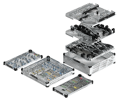
Orthognathics
MODUS 2 — Conceito do sistema
6
Três tecnologias
Transmissão de torque, corte ósseo e bloqueio angular. Comprovadas em campo, herdadas pelo MODUS 2.
HexaDrive®
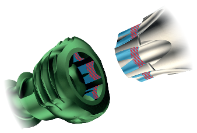
- ⎼Superfície azul transmite torque; vermelha retém o parafuso
- ⎼Auto-fixação entre parafuso e chave
- ⎼Maior transmissão de torque
SpeedTip®
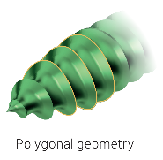
- ⎼Corte imediato do osso
- ⎼Ponta poligonal reduz o torque de inserção
- ⎼Rosca precisa e afiada, ponta autoperfurante
TriLock®
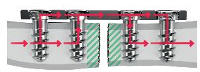
- ⎼Ângulo variável de ± 15°
- ⎼Sem zona de carga
- ⎼Eixo cônico e geometria poligonal
MODUS 2 — Tecnologias
7